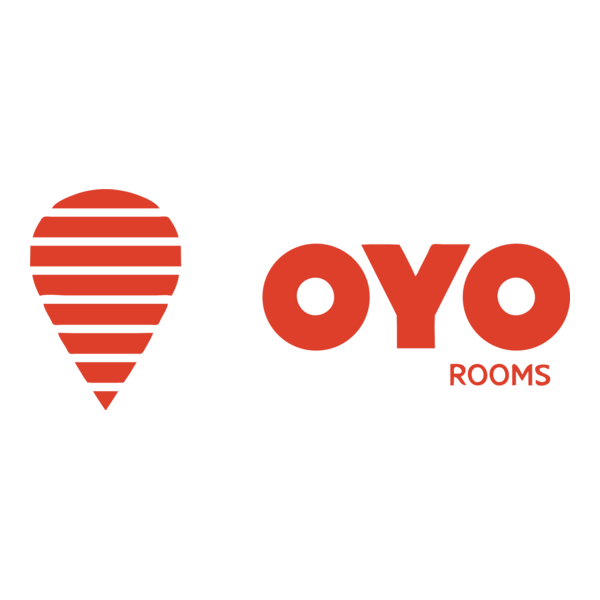
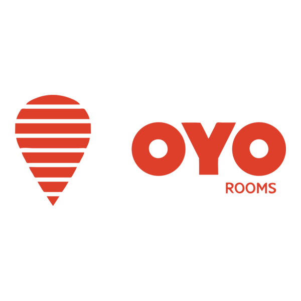
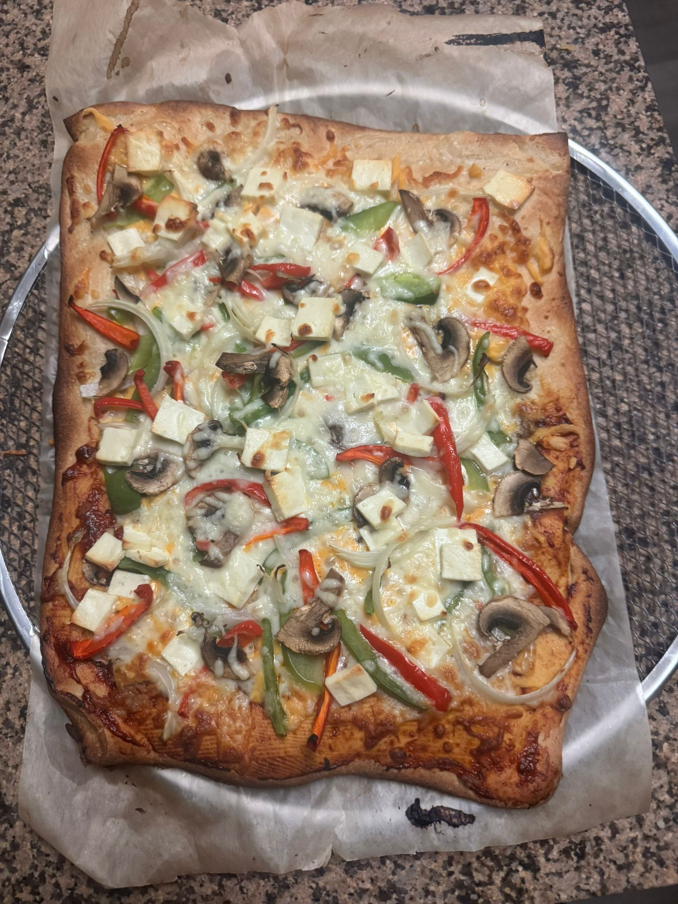
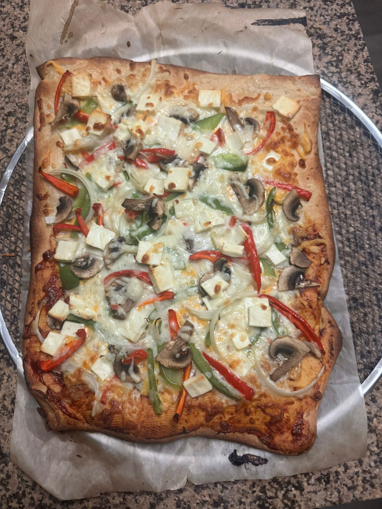

Hi 👋
I'm Kruti Ray
Download My ResumeAbout Me
WHO AM I?
Hi, I'm Kruti - a Business Analyst who blends empathy, strategic thinking, and data-driven insights to design impactful solutions that drive business growth and enhance user experiences.
With over 3 years of experience spanning EdTech and Enterprise Software domains, I thrive at the intersection of business strategy, technology, and user experience. I believe in the power of turning data-driven insights into scalable, intuitive solutions that deliver measurable impact and drive organizational success.
My goal is to craft meaningful, user-centric experiences that enhance engagement, streamline workflows, and support innovation. With a continuous learning mindset and adaptability at my core, I approach every project with clarity, purpose, and a passion for driving positive change in evolving digital environments.

 


My Work
HOW DO I TURN DATA INTO RESULTS?
Testimonials
WHAT'S IT LIKE TO WORK WITH ME?
Kruti is a proactive professional who takes full ownership of her responsibilities. She has successfully managed multiple clients independently, consistently delivering high-quality work ahead of deadlines while handling post-sales tasks with precision. In addition to her own contributions, Kruti actively supports new team members, helping them learn tools and adopt best practices to ensure quality deliverables. She is a hardworking, reliable, and dedicated team player.
- Sweksha Shah, Senior Manager, UX/UI & Business Development, BYJU's-The Learning App
I was very impressed with how Kruti quickly mastered Salesforce, creating insightful dashboards that significantly improved visibility into sales performance and customer behavior. Her ability to translate product analytics into actionable business insights helped drive revenue gains of ₹10–12 lakhs in just 2 months. Even under shifting priorities, she maintained high-quality delivery and supported her team. She would be an asset to any academic or professional program.
- Ahin K Uday, Manager, Data & Product Analytics, BYJU's-The Learning App
Great work, Kruti—another win for the team! Taking on this project as a stretch assignment and using product data to drive insights, despite limited resources, really shows your initiative and growth mindset. Your analysis directly supported better decision-making and helped us deliver on time and within budget. Keep on doing the commendable job!
- Poojashree Mohapatra, Team Lead, Data & Product Analytics, BYJU's-The Learning App
Work Experience
HOW HAVE I MADE AN IMPACT?
Central Library - University of Texas, Arlington(UTA)
Graduate Student Associate / OER Program Associate
Jun 2024 - Aug 2024
- Managed daily operations of the automated book lending machine, ensuring 99% uptime and resolving technical issues to maintain a seamless user experience.
- Coordinated the migration of 200+ Open Educational Resources (OER) by tracking timelines and stakeholder input, resulting in a 30% increase in faculty adoption.
- Delivered cross-functional support through faculty training, licensing guidance, and metadata optimization—boosting resource discoverability by 40% and supporting long-term digital preservation.
- Utilized library systems such as Alma, Summon (Ex Libris), and LibKey Suite to streamline OER indexing, access, and integration into institutional repositories.
Housing - University of Texas, Arlington(UTA)
Summer Housing Ambassador
March 2024 - June 2024
- Streamlined student support operations using StarRez software, resolving 150+ housing queries and achieving 90%+ satisfaction through efficient communication and issue tracking.
- Coordinated campus-wide housing tours and recruitment events, increasing student engagement and housing application rates by 15%, while ensuring consistent messaging and service delivery across virtual and in-person platforms.
- Collaborated with cross-functional teams to optimize onboarding workflows, improve administrative processes, and support key departmental initiatives aligned with housing policy and student experience goals.
BYJU'S - The Learning App
Senior Business System Analyst
June 2021 - Aug 2022
- Market Research & Analysis: Conducted in-depth market research to identify trends, opportunities, and competitor insights, helping shape business strategies.
- Data-Driven Decision Making: Analyzed sales and market data to provide actionable insights that informed key business decisions and improved operational efficiency.
- Strategic Planning: Developed and implemented strategic business plans that resulted in a 20% increase in revenue and a 15% improvement in client retention.
- Client Engagement: Worked closely with clients to understand their needs, developed customized solutions, and ensured high satisfaction and engagement.
- Cross-Functional Collaboration: Collaborated with sales, marketing, and product teams to align strategies, optimize campaigns, and achieve business objectives.
- Reporting & Presentations: Created reports and presentations that summarized key market insights, campaign performance, and recommendations for senior management.
BYJU'S - The Learning App
Product Analyst
Dec 2019 - June 2021
- Led cross-functional execution of two pilot product launches, defining user stories and managing timelines—delivered both projects 2 weeks ahead of schedule, driving a 10% increase in user acceptance.
- Enhanced reporting accuracy by 30% through a new data validation system and optimized customer engagement and lead management using LeadSquared and Salesforce, improving team efficiency and decision-making.
- Conducted market research, A/B testing, and competitive analysis to shape product strategy.
- Recognized as Best Performer of the year 2020 for consistently delivering high-impact results.
EDUCATION
WHERE DID I BUILD MY FOUNDATIONS?
I am undergoing my Masters in Information Technology Management(ITM) from Webster University, USA.
During my time there, I have actively participated in volunteering initiatives and engaged in external hackathons and networking events to deepen my understanding of emerging trends in the field. Additionally, I’ve taken part in community events at the local public library, which has enriched my cultural perspective and helped me connect more closely with American culture and diverse communities.
- Courses: Systems Analysis & Design, Communications Networks, IT Security, Project Management
- Projects: Investing in American Express (AXP): A Strategic Growth Opportunity
- Term Paper on Enhanced Decision-Making with Real-Time Analytics and Explainable AI.
- Equity Research Analysis for Investment Decision Making (Accounting)
- Analysis of Undergraduate Tuition Fees for 2023 - 2024 by using one-sample t-test testing Statistic.
- Forecasting Medical Insurance Costs: A Data Mining Perspective.
I have completed my Bachelor of Technology in Computer Science and Engineering from Institute of Technical Education & Research(ITER) SOA University, India.
During my undergrad, I participated in cultural fests, hackathons, and clubs to explore my interests. I also worked on multiple projects and undertook internships to widen my technical skillset. Undergrad was a challenging yet exciting phase of my life and taught me to be independent and self-sufficient!
- I participated in 5 Technical Hackathons and received commendations for 3.
- I volunteered and managed cultural events on campus, such as Rendezvous IIT Delhi, Global Social Impact Summit 2017, E-Cell IIT Bombay, XAVION 2017, X-Seed-The Enterpreneurship Cell, Genesis - Cultural Fest 2017, Genesis 2018, SOA Literature Debate, Schooler Coaster 2018, and many more.
- I was a part of the Computer Society of India, ITER, and conducted sessions on interview and placement preparation strategies to assist juniors in preparing for the job search.
- I had founded and operated a startup magazine, Elan – Within Us, which specialized in publishing, magazine production, and event planning across the city. The venture successfully ran for four consecutive years, delivering positive business outcomes and creating value for all stakeholders involved.
- I served as Vice City Head at The Grapevine Co. - event plannning company, leading city-wide strategic planning, event management, team operations, and stakeholder engagement to drive business growth and successful event execution.
Hobbies & Interests
WHAT INSPIRES ME OUTSIDE OF WORK?


 
